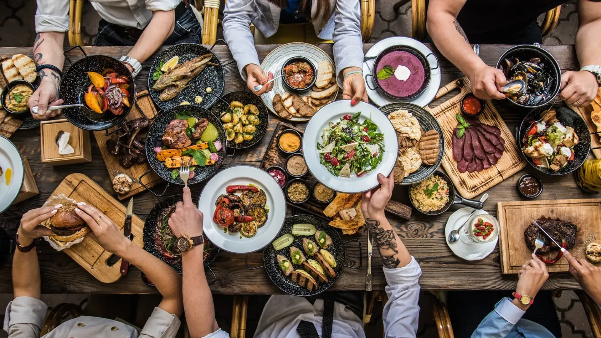
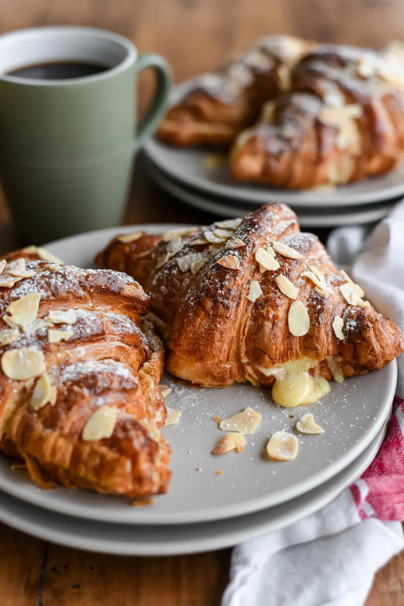
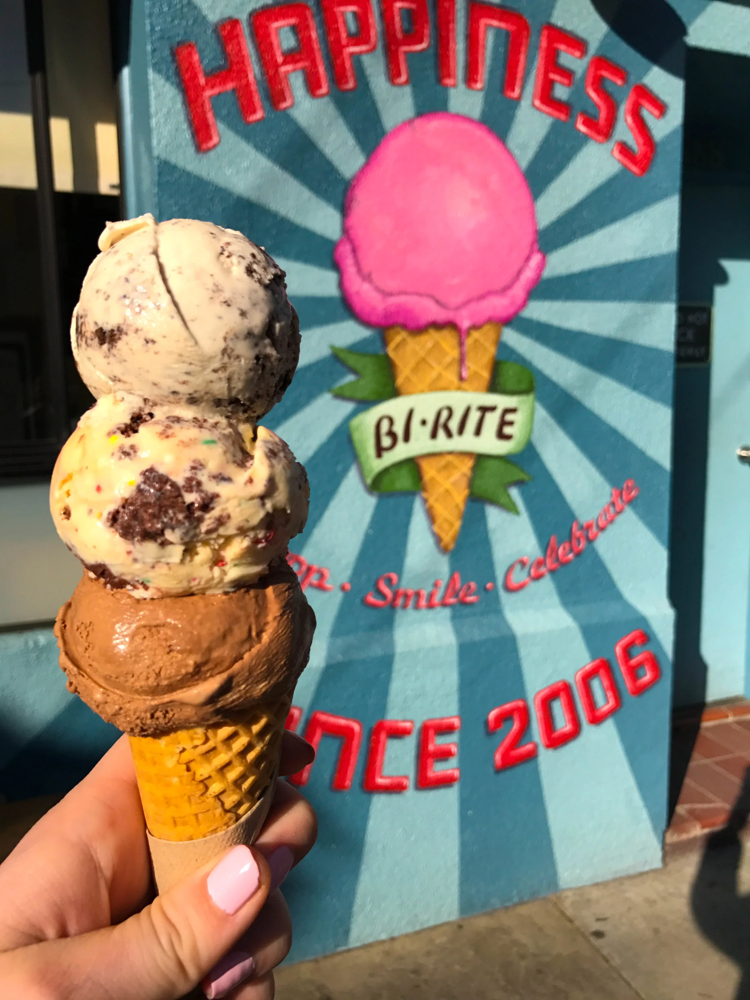
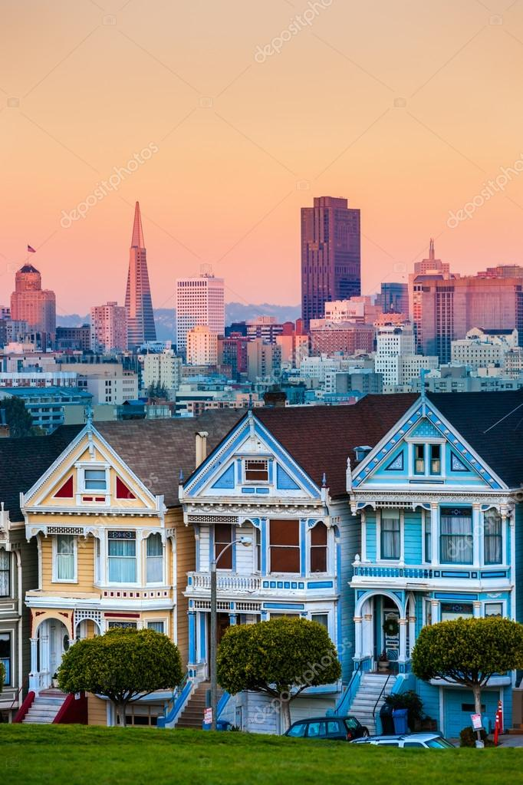
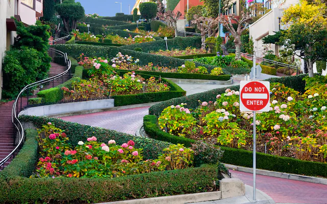
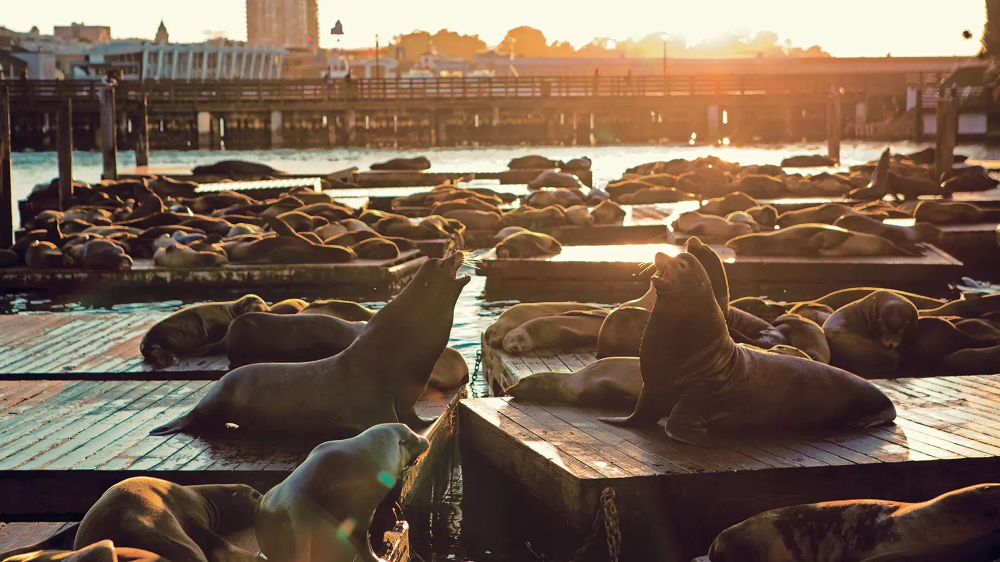

San Francisco Food Culture
Experience the Flavors That Define the City
From iconic sourdough to world-famous dim sum, San Francisco’s food scene blends global heritage with California creativity. Discover the dishes locals love.

🥣 Sourdough Culture
Home to America's most iconic sourdough bread since 1849.
🥟 Chinatown Flavors
The oldest Chinatown in the U.S., known for dim sum & noodle houses.
🦀 Seafood by the Bay
Cioppino, crab, oysters — fresh straight from the Pacific waters.
Signature Dishes to Try
Sweet Finishes

Ghirardelli Sundae

Tartine Pastries

Bi-Rite Ice Cream
San Francisco Food Landmarks
Tap a food spot to open the exact location in Google Maps.
.png)
🦀 Cioppino
Iconic seafood stew best enjoyed near Fisherman’s Wharf.
Fisherman’s Wharf🥖 Clam Chowder (Sourdough Bowl)
San Francisco classic served in fresh sourdough bread.
Pier 39🌮 Mission-Style Burrito
Large, foil-wrapped burritos packed with bold flavors.
Mission District🥟 Authentic Dim Sum
Steamed dumplings and traditional Cantonese dishes.
Chinatown🍨 Ghirardelli Chocolate Sundae
Decadent chocolate desserts by the waterfront.
Ghirardelli SquareSuggested Itineraries
Curated plans to help you explore San Francisco effortlessly.
- Morning: Golden Gate Bridge, Crissy Field
- Afternoon: Fisherman’s Wharf, Pier 39
- Evening: Lombard Street, Twin Peaks sunset
- Day 1: Golden Gate Bridge, Sausalito
- Day 2: Alcatraz, Chinatown, North Beach
- Day 3: Mission District, Painted Ladies, Castro
- Dim Sum in Chinatown
- Mission-style Burrito
- Cioppino at Fisherman’s Wharf
- Ghirardelli Chocolate Sundae
Gallery


